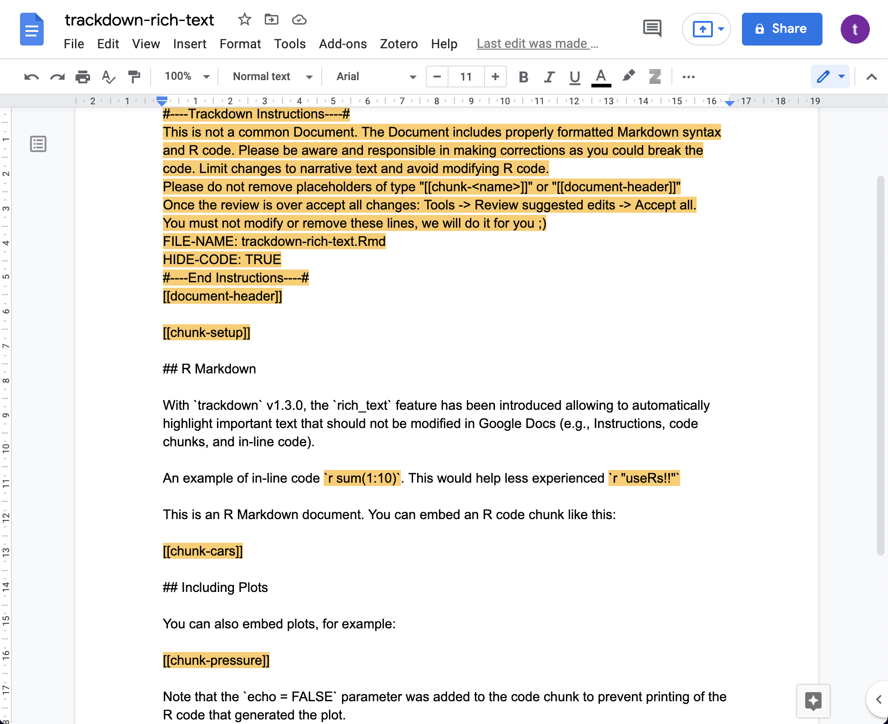
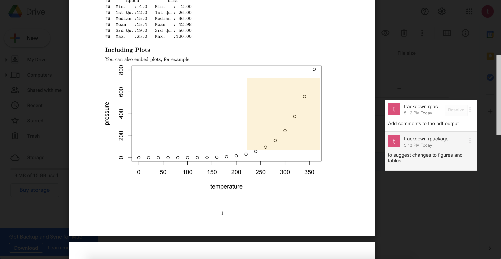

The main idea behind the trackdown workflow is simple:
Upload the .Rmd (or Quarto / .Rnw) document to
Google Drive to collaboratively write/edit the narrative text in Google
Docs; download the document locally to continue working on the code
while harnessing the power of Git for version control and
collaboration.
To manage this workflow, trackdown offers different
functions:
-
upload_file()uploads a file for the first time to Google Drive. -
update_file()updates the content of an existing file in Google Drive with the contents of a local file. -
download_file()- downloads the edited version of a file from Google Drive and updates the local version. -
render_file()- downloads a file from Google Drive and renders it locally.
Moreover, trackdown offers additional features to
facilitate the collaborative writing and editing of documents in Google
Docs. In particular, it is possible to:
- Hide Code (See hide_code): Code in the header of a document (YAML header or LaTeX preamble) and code chunks are removed from the document when uploading to Google Drive and are automatically restored during download. This prevents collaborators from inadvertently making changes to the code which might corrupt the file and allows them to focus on the narrative text.
- Rich Text (See rich_text): Upload rich documents to Google Docs. Now, important text that should not be changed is automatically highlighted (e.g., placeholders hiding the code, header of the document, code chunks, and in-line code). This prevents collaborators from inadvertently making changes to the code which might corrupt the file.
-
Upload Output (See path_output): The actual output document (i.e.,
the rendered file) can be uploaded to Google Drive in conjunction with
the
.Rmd(or Quarto /.Rnw) document. This helps collaborators to evaluate the overall layout including figures and tables and it allows them to add comments to suggest and discuss changes. - Use Google Drive shared drives (See shared_drive): The documents can be uploaded to either a personal Google Drive or to a shared drive to facilitate collaboration.
For a general overview of the package, see the
trackdown-package help page or
vignette("trackdown-workflow") to know more about the
workflow and vignette("trackdown-tech-notes") for an
overview of technical details.
Arguments and Features
All trackdown functions share some common arguments that
are used to manage the workflow:
*_file(file,
gfile = NULL,
gpath = "trackdown",
shared_drive = NULL)Moreover, when uploading or updating a file in Google Drive with
upload_file() or update_file() respectively,
two extra arguments are available:
-
hide_codeto hide the header code and code chunks from the document. -
path_outputto upload the rendered output document to Google Drive in conjunction with the.Rmd(or Quarto /.Rnw) document.
In this section, all arguments of trackdown functions
are introduced, describing default settings and highlighting main
features.
file
A string indicating the path of the local .Rmd (or
Quarto / .Rnw) file.
All trackdown functions take as reference the local file
to manage the workflow. Thus, the file argument is
mandatory, both when uploading (or updating) a file to Google Drive or
when downloading the edited version from Google Drive.
gfile
A string indicating the name of the file in Google Drive.
By default (NULL), the name of the local file (without
extension) is used as the name of the file in Google Drive. By
specifying the gfile argument one can personalize the name
of the file in Google Drive. In this case, one has to remember to point
to the correct file in Google Drive every time one updates or downloads
the file during the collaborative writing process.
gpath
A string indicating a directory in My Drive or in a shared drive (optional).
By default, files are uploaded to the folder
"trackdown/" on Google Drive. To specify another folder,
the full path is required (e.g., "trackdown/my_folder/").
If the indicated folder is not already available on Google Drive, the
user is asked for permission to create it. One can use NULL
to upload the file directly at the root level, although this is not
recommended.
shared_drive
A string indicating the name of a shared drive (optional).
By default, a personal Google Drive (i.e., My Drive) is used, but a shared drive can be specified to facilitate collaboration.
hide_code
A logical value indicating whether code in the header of the document (YAML header or LaTeX preamble) and code chunks should be removed from the document when it is uploaded (or updated).
This argument is available only for the upload_file()
and update_file() functions. By default, the value is set
to FALSE. If set to TRUE, the code in the
document header and code chunks will be removed from the document and
automatically restored when downloaded. Placeholders of type
“[[document-header]]” and “[[chunk-<name>]]” are displayed
instead.
This feature is intended to prevent collaborators from inadvertently making changes to the code in Google Docs that might corrupt the file and allows them to focus on the narrative text. Note that to guarantee correct code restoration, placeholders must not be modified or removed.
rich_text
From
trackdownv1.3.0 [currently only available on GitHub]
A logical value (default is ) indicating whether to upload to Google Docs a rich document.
Rich text feature allows to:
-
Highlight Important Text. Important text that should not be changed is highlighted. This includes, added Instructions at the top of the document, placeholders hiding the code, header of the document (YAML header or LaTeX preamble), code chunks, and in-line code. This prevents collaborators from inadvertently making changes to the code which might corrupt the file. See example in Figure below.

The rich_text_par argument used is used to pass a list
with custom settings for rich_text. Currently supported
custom settings are:
-
rgb_color. Define the highlight colour. It requires a list with elementsred,green, andbluewhere each element has to be a numeric value between 0 and 1.
Examples of custom settings,
# Change default color to opaque light-blue
blue_color <- list(red = 102/255,
green = 204/255,
blue = 255/255)
upload_file(file = "path-to/my-file", rich_text = TRUE,
rich_text_par = list(rgb_color = blue_color))
path_output
A string indicating the output path (i.e., the resulting rendered document).
This argument is available only for the upload_file()
and update_file() functions. By default
(NULL), no output is uploaded to Google Drive. If
specified, the output file (i.e., the rendered HTML or PDF file) is
uploaded in conjunction with the main file. The output is named in
Google Drive like the main file plus “-output” at the end (e.g., given a
main file with the name “My-Report”, the output would be named
“My-Report-output”).
This feature is intended to help collaborators to evaluate the overall layout, including figures and tables, and allows them to add comments to propose and discuss changes (See Figure below). Note that, in the case of PDF files, it is possible to add comments directly to the file in Google Drive. However, this is not possible with HTML files.

In the case of HTML files, trackdown can automatically
convert them into PDFs before uploading them to Google Drive. This
feature requires that the pagedown package is available. As
the pagedown package is not installed as a dependency of
trackdown, it has to be installed manually by the user if
it is not already available. The function
pagedown::chrome_print() is used to convert an HTML into a
PDF. Note that Google Chrome has to be installed on the user’s system
for this conversion operation.
Extra Arguments
Some extra arguments have been added to allow specific function features:
-
forcelogical value indicating whether to skip confirm check by user (default is ). This argument is available for all functions and allows users to skip confirm checks about overwriting documents. See issue #27 for further details -
rm_gcommentslogical value indicating whether or not to remove Google comments. When downloading the document for a quick check you will download all Google comments in the document as well. This argument allows users to remove Google comments automatically (available only fordownload_file()andrender_file()functions). See issue #25 for further details -
openlogical value indicating whether to open the created document in a browser (default isTRUEin interactive sessions). See issue #46, PR by Maëlle Salmon